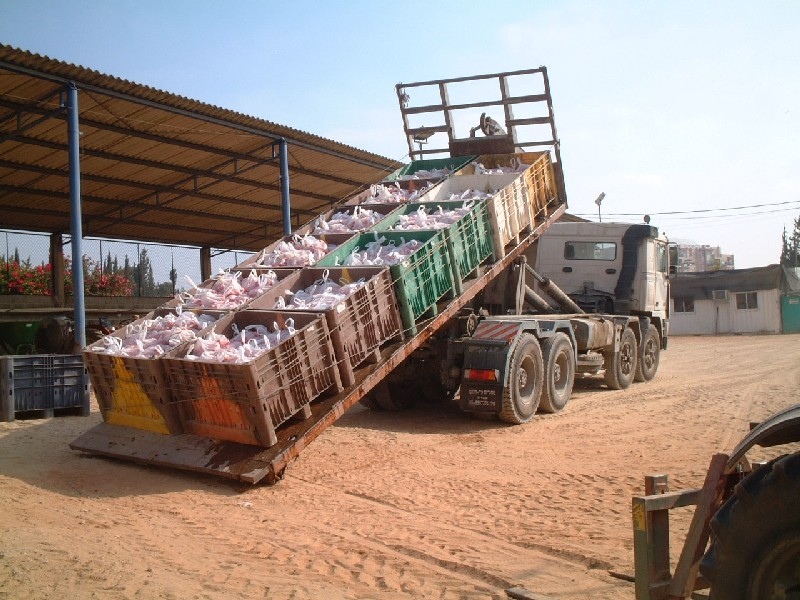

Seed collectionFrom single lines that segregate for a mutant phenotype seeds areextracted separately from two mutant plants. From lines that show segregation for two mutations (where there are 2 independent plants for each of the mutations) seeds are extracted from 2 plants for each phenotype (total 4) From single mutant lines where there is a single plant showing a mutant phenotype seeds are extracted from it and from a bulk of the normal sibs. From single lines that segregate for sterility seeds are extracted from the bulk (1 fruit per plant). From lines with more than 2 mutations seed will be extracted individually from all plants. Bulk seed from M2 families where extracted individualy from 5000 EMS lines. This is one quarter of the load:  |